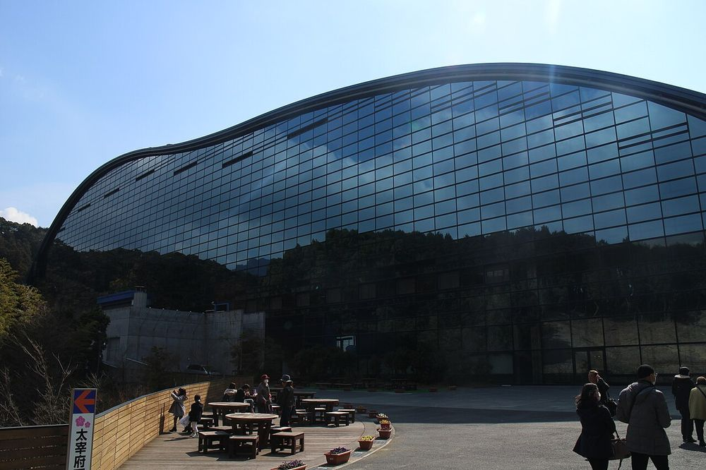
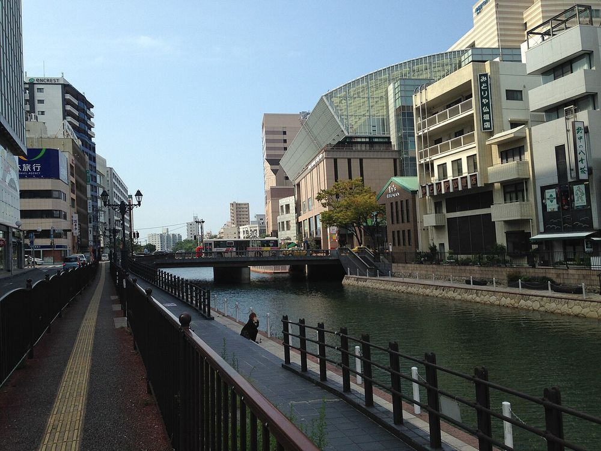
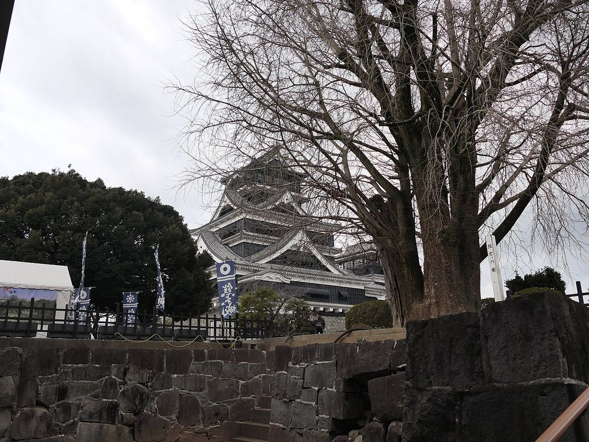

Fukuoka Art and Day Trips
Four days from one hotel in Fukuoka: the Kyushu National Museum, Fukuoka’s two art museums and teamLab, and day trips by train to Nagasaki and Kumamoto. No driving, no hotel moves.
- Length
- 4 days
- Distance
- Day trips by train
- Best time
- Oct–Nov, Mar–Apr
- Per person, excl. flights
- from CNY 3,180
Researched November 2026 for a December trip, and cross-checked with a second research tool. Hours and prices change, so check before you go. Exchange rate ¥1 ≈ CNY 0.042 (26 Nov 2026).
Why Fukuoka as a base
The museum-heavy, no-driving way to see northern Kyushu: unpack once in Fukuoka, then use fast trains for Nagasaki and Kumamoto. Evenings are for Hakata’s food: mizutaki, motsunabe and tonkotsu ramen.
In December: cool, about 6–13°C, mostly dry. Fukuoka Art Museum’s Chintz exhibition runs to 20 Dec, the Kyushu National Museum’s Himiko to 11 Jan, and teamLab lights up the Fukuoka Castle ruins in the evenings. Kumamoto’s art museums are between exhibitions this month. Hotels are busy on December weekends, so book early.
Best time to go: October to November and March to April are best, mild and good for walking between museums; Fukuoka’s cherry blossom opens in late March. Early May brings the Hakata Dontaku festival and the first half of July the Yamakasa races, both crowded. December is quiet and suits an indoor art trip. Avoid the early June to mid-July rainy season and the August heat.
The route: One hotel in Fukuoka for 3 nights. Day trips to Dazaifu by bus (about 40 minutes), Nagasaki by train (about 1h20), and Kumamoto by Shinkansen (about 35 minutes). A 3-day Northern Kyushu rail pass covers both long trips.
Highlights
- The Kyushu National Museum’s Himiko and Her Mirrors, and Dazaifu Tenmangu
- Fukuoka Art Museum (a Kunio Maekawa building in Ohori Park) and the Fukuoka Asian Art Museum
- teamLab’s Festival of Light at the Fukuoka Castle ruins
- Nagasaki in a day: Dejima, Ōura Cathedral, Glover Garden and Kengo Kuma’s art museum
- Kumamoto Castle and the Artpolis buildings by leading architects
Good to know
- Most museums close on Mondays. This plan is built for a Friday-to-Monday trip and keeps Monday for Kumamoto, where nothing important closes.
- The JR Kyushu Rail Pass is for visitors on a temporary-visitor entry; check you qualify.
- teamLab needs a timed ticket bought in advance at weekends.
- The Nagasaki day is full: about 2h40 on trains for 5–6 hours in the city.
Two ways to do it
💰 Best value
- Stay: Richmond Hotel Hakata Ekimae, 5 minutes from Hakata Station (¥18,800–33,000 (CNY 790–1,380) a night, depending on the night and where you book).
- Eat: mizutaki at Nagano, motsunabe at Ikkei, Hakata ramen at Issou.
- About CNY 3,180–4,570 per person excluding flights.
✨ Best experience
- Stay: Hotel Il Palazzo, Aldo Rossi’s 1989 landmark by the Naka River (about ¥80,500 (CNY 3,360) a night).
- Eat: mizutaki at Toriden, unagi at Yoshizuka Unagiya, motsunabe at Yamanaka, tonkatsu at Katsuretsu-tei.
- About CNY 7,630–8,780 per person excluding flights.
Same days for both; only the hotel and meals change.
Route map
● numbered: overnight stops in order ● sight in the city. ● day trip by train or bus (dashed). Tap a point for its days. Dashed lines are straight lines to each day-trip city, not the rail route.
Itinerary
Why this order: the Kyushu National Museum and the Fukuoka Art Museum close on Mondays, and Nagasaki’s art museum on its 2nd and 4th Mondays. Kumamoto has nothing important that closes on a Monday.
Top sights




_VLux5_hdsr_kt03.jpg){kind=link}
- Kyushu National Museum and Dazaifu Tenmangu: Kiyonori Kikutake’s glass museum on Asian exchange, and the great shrine of scholarship.
- Fukuoka Art Museum: Kunio Maekawa’s 1979 building, renovated in 2019, with a strong modern collection.
- Fukuoka Asian Art Museum: the leading museum of modern Asian art in Japan, on the 7th and 8th floors of Hakata Riverain.
- Nagasaki: the Atomic Bomb Museum (¥200 (CNY 10)), Dejima (¥1,100 (CNY 45)), Ōura Cathedral (¥1,000 (CNY 40)), Glover Garden (¥1,300 (CNY 55)) and the Prefectural Art Museum.
- Kumamoto: the castle, restored after the 2016 earthquakes, and Artpolis buildings around the station and the castle.
On in December 2026
- Kyushu National Museum: Himiko and Her Mirrors: The Making of a Kingdom, 31 Oct–11 Jan, ¥2,000 (CNY 85).
- Fukuoka Art Museum: Chintz: A Global Story (the Karun Thakar Collection), 17 Oct–20 Dec, ¥1,700 (CNY 70); also Yoshida Hiroshi at 150 and Matsunaga Jian’s winter tea gatherings.
- Fukuoka Asian Art Museum: Asian Art Walk: South Asia Special Edition, 19 Sep–11 Jan, ¥1,000 (CNY 40).
- teamLab, Fukuoka Castle ruins: Festival of Light, 30 Oct–11 Jan, 18:15–22:00; weekdays ¥2,300 (CNY 95), weekends ¥2,500 (CNY 100); timed tickets.
- Nagasaki Prefectural Art Museum: Hello Kitty, 17 Oct–11 Jan, ¥2,000 (CNY 85), and Yuji Saiga’s Gunkanjima photographs.
- Kumamoto: the prefectural art museum has nothing on in December; the contemporary art museum has a small free show (Dolly ( ), Isayama Genki, to 27 Dec).
Museums
| Museum | Hours | Closed | Entry |
|---|---|---|---|
| Kyushu National Museum | 9:30–17:00 (Sat to 19:00 during Himiko) | Mondays | ¥2,000 (CNY 85) (special) |
| Dazaifu Tenmangu Treasure House | 9:00–16:30 | Mondays | ¥500 (CNY 20) |
| Fukuoka Art Museum | 9:30–17:30 | Mondays | ¥200 (CNY 10); special ¥1,700 (CNY 70) |
| Fukuoka Asian Art Museum | 9:30–18:00, Fri and Sat to 20:00 | Wednesdays | ¥1,000 (CNY 40) |
| Hakata Traditional Craft Center | 10:00–18:00 | Wednesdays | Free |
| Nagasaki Prefectural Art Museum | 10:00–20:00 | 2nd and 4th Mondays | ¥420 (CNY 20); special ¥2,000 (CNY 85) |
| Contemporary Art Museum Kumamoto | 10:00–20:00 | Tuesdays | Free (this month) |
| Kumamoto Castle | 9:00–17:00 | 29 Dec | ¥800 (CNY 35) |
Where to eat
Tabelog 3.72 · 5,200 reviews badges are Tabelog scores: 3.0 is average, 3.5+ very good. Read from Tabelog search listings in late November 2026. Our bar is 3.4+ and 50+ reviews.
Day 1
- Lunch: Yasutake on the Dazaifu shrine approach Tabelog 3.59 · 638 reviews, hand-made soba, about ¥1,500 (CNY 65). Or Wagyu Mentai Kagura Tabelog 3.48 · 188 reviews, about ¥3,000 (CNY 130).
- Dinner: mizutaki (chicken hotpot) at Mizutaki Nagano Tabelog 3.60 · 1,457 reviews, about ¥5,000 (CNY 210) (closed Sundays; book by phone). Or Toriden Tabelog 3.66 · 983 reviews, ¥8,000–10,000 (CNY 330–420).
Day 2
- Lunch: Shikairō, the birthplace of champon, by Ōura Tabelog 3.49 · 1,702 reviews, about ¥1,500 (CNY 65). Or Kōzanrō Chinatown Shinkan Tabelog 3.67 · 1,851 reviews, sara udon, about ¥2,000 (CNY 85).
- Dinner: back in Hakata: Hakata Issou Tabelog 3.72 · 5,200 reviews, tonkotsu ramen, under ¥1,000 (CNY 40). Or Yakitori Hachibei Tabelog 3.41 · 256 reviews, ¥5,000–6,000 (CNY 210–250).
Day 3
- Lunch: Ganso Hakata Mentaiju Tabelog 3.55 · 3,400 reviews, mentaiko rice box, about ¥2,000 (CNY 85). Or Yoshizuka Unagiya Tabelog 3.71 · 2,380 reviews, unagi since the Meiji era, ¥2,000–5,000 (CNY 85–210) (closed Wednesdays).
- Dinner: motsunabe (offal hotpot) at Ikkei Haruyoshi Tabelog 3.57 · 580 reviews, ¥3,000–4,000 (CNY 130–170). Or Yamanaka Akasaka Tabelog 3.67 · 2,027 reviews, white-miso motsunabe, ¥4,000–5,000 (CNY 170–210).
Day 4
- Lunch: Kumamoto Ramen Kokutei Tabelog 3.68 · 2,600 reviews, garlic-oil ramen near the station, about ¥1,000 (CNY 40). Or Katsuretsu-tei Tabelog 3.70 · 1,756 reviews, tonkatsu, about ¥2,500 (CNY 100).
- Dinner: at Fukuoka Airport before the flight (the airport’s restaurants score just under our bar, so eat early in Hakata if you can).
Shopping
- Hakata: Hakata-ori textiles and Hakata dolls at the Traditional Craft Center; mentaiko at Hakata Station.
- Tenjin and Daimyo: department stores and independent shops.
- Dazaifu: umegae-mochi on the shrine approach.
- Nagasaki: castella from Shōōken or Fukusaya.
Where to stay
One hotel for all three nights. Prices for two seen in late November 2026 for a December weekend; Fukuoka is busy on December weekends.
Richmond Hotel Hakata Ekimae
8.6About ¥18,800–33,000 (CNY 790–1,380) a night on JTB’s December calendar. Booking.com showed higher prices, then no rooms, so compare sites. Five minutes from the station for every train.
Hotel Il Palazzo
9.0About ¥80,500 (CNY 3,360) a night on Booking.com; other sites list a standard double with breakfast for less, so compare. Aldo Rossi’s 1989 design hotel; walk to Nakasu, Tenjin and the Asian Art Museum.
Budget
Per person, two sharing a room, excluding flights. Estimated November 2026. Exchange rate ¥1 ≈ CNY 0.042 (26 Nov 2026).
- 💰 Best value: about CNY 3,180–4,570 (hotel 1,180–2,380 · trains, buses and subway 820 · food 590–780 · entry fees and teamLab 600)
- ✨ Best experience: about CNY 7,630–8,780 (hotel 5,050–5,810 · trains, buses and subway 820 · food 1,170–1,550 · entry fees and teamLab 600)
Not included: flights, breakfast, shopping, travel insurance, and a 10–15% contingency.
Trains and getting around
- Hakata ↔ Nagasaki: Relay Kamome, changing at Takeo-Onsen to the Shinkansen, about 1h20, ¥6,490 (CNY 270) reserved.
- Hakata ↔ Kumamoto: Kyushu Shinkansen, 32–40 minutes, ¥5,840 (CNY 240) reserved.
- Northern Kyushu Rail Pass, 3 days: ¥15,000 (CNY 630), for visitors on a temporary-visitor entry. Days 2–4 at full fare would cost about ¥24,660 (CNY 1,030), so the pass pays for itself.
- Dazaifu: Tabito bus from Hakata (¥800 (CNY 35)) or from the airport (¥700 (CNY 30)); not covered by the pass.
- IC cards work on the subway, buses and Kumamoto’s trams, but can’t pay Shinkansen fares.
Sources
Checked 27 November 2026, then cross-checked with a second research tool; conflicting points were settled on official sites. Restaurant scores come from Tabelog search listings and may drift. Hotel scores are Booking.com guest reviews out of 10. Everything here is summarised in our own words. How this research is done →
- Museums: Kyushu National Museum · Fukuoka Art Museum · Fukuoka Asian Art Museum · Nagasaki Prefectural Art Museum · CAMK · Kumamoto Prefectural Museum of Art
- Sights and events: teamLab · Kumamoto Castle · Kumamoto Artpolis · Dejima · Glover Garden
- Trains: JR Kyushu Rail Pass · JR Kyushu fares · Dazaifu Liner bus
- Food and stays: Tabelog search listings · Booking.com and JTB (prices and scores, late November 2026)
- Photos (Wikimedia Commons): see the credit under each image.